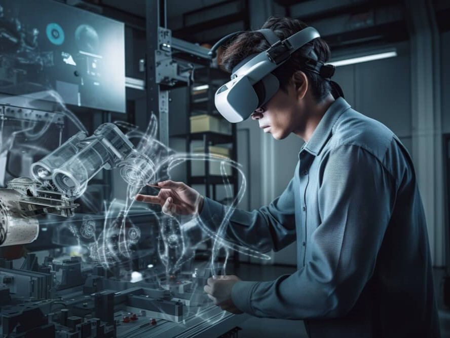

Plataforma de gemelos digitales para la optimización de procesos de fabricación
Descripción del proyecto
Este proyecto se centra en el desarrollo de una Plataforma de Gemelos Digitales con el objetivo de mejorar
la eficiencia en los procesos de fabricación industrial. La idea principal es crear réplicas virtuales
precisas de los sistemas y procesos físicos, permitiendo una supervisión detallada en tiempo real.
La plataforma busca proporcionar una herramienta práctica para la planificación y mejora continua de los
procesos de fabricación. A través de la visualización y monitorización de cada fase del proceso, se
pretende optimizar la eficiencia operativa y reducir posibles problemas en la producción.

Empresas colaboradoras
Empresa |
Aportaciones |
|---|---|
|
Automatización de procesosAnálisis predictivoComponentes electrónicos |
|
Algoritmos de IAProcesamiento de datosInterfaces de usuario |